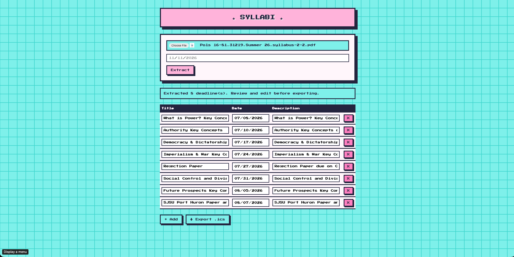
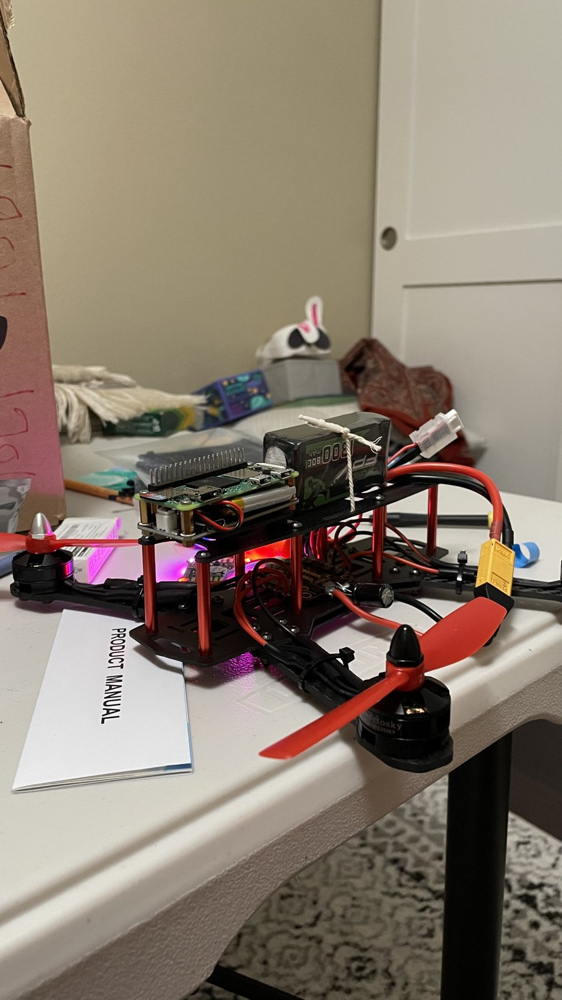
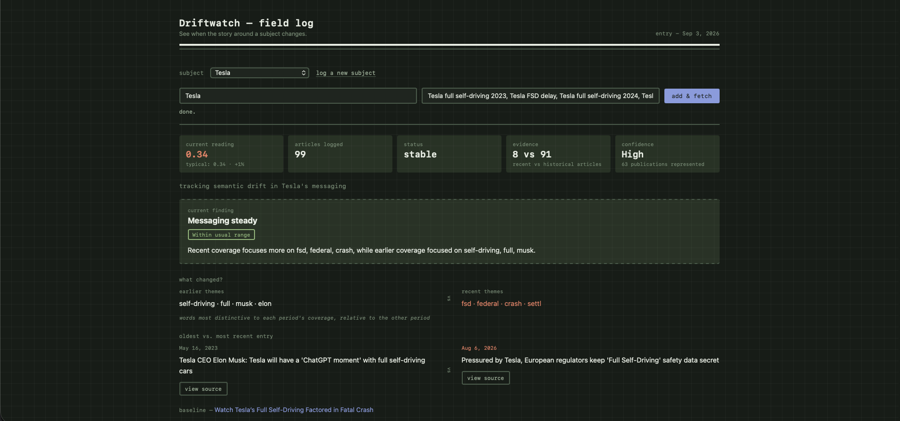
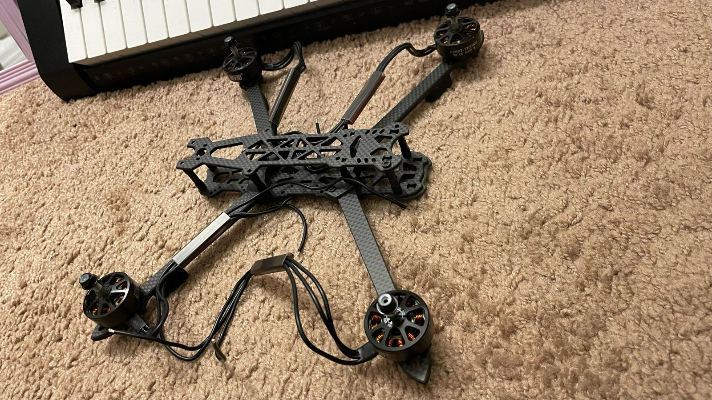
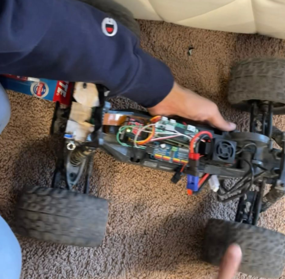

STAGE 1
ATMO
A drone atmosphere profiler. A Raspberry Pi payload gives a drone live in-flight air data (altitude, climb rate, turbulence) with no internet needed. Built at Cal Hacks 13.0.
[ATMO DEMO VIDEO, 9:16 portrait]
STACKPython, FastAPI, I2C, Raspberry Pi, Grove SPA06-003 barometer
RESULT5 Hz pressure sampling, median-of-5 + EMA spike filter, dashboard refreshing every 1 s over its own offline wifi hotspot.
ROLECal Hacks 13.0, Oct 2026
> View on GitHub
STAGE 2
SYLLABI
Upload a course syllabus PDF, get every deadline and exam as calendar reminders. Adopted by 10+ students. The eval harness caught a real hallucination bug.

STACKFastAPI, Gemini, AWS, Netlify
RESULT89% recall on deadline extraction, checked against ground-truth deadlines.
ROLESolo build, Jul to Aug 2026
> View on GitHub
STAGE 3
DRONE CONTROL PIPELINE
A Raspberry Pi Zero 2W that flies a drone whose receiver died, turning wireless gamepad input into Betaflight flight-controller commands.

STACKRaspberry Pi Zero 2W, UDP, UART/USB, Betaflight
RESULT20 to 50 ms gamepad to flight controller. UDP over TCP to avoid head-of-line blocking, plus a threading lock on serial writes.
ROLEBuilt Nov 2025 to Feb 2026
> View on GitHub
STAGE 4
DRIFTWATCH
Flags when a company's or public figure's news coverage suddenly shifts in tone or topic. Scored across 370+ real news articles.

STACKSerpApi, RQ + Redis, sentence-transformers, Postgres + pgvector, FastAPI, Chart.js
RESULTDrift = cosine distance from an entity's embedding centroid. Every outlier links back to its source article.
ROLEScoring, API and dashboard. Teammate built ingest and infra. DevNetwork API World Hackathon.
> View on GitHub
STAGE 5 · IN PROGRESS
AUTONOMOUS DRONE COMPANION
A two-person build of a 5-inch autonomous quadcopter. A Raspberry Pi Zero 2W companion streams live MAVLink data to QGroundControl and C++17 telemetry software, tested in ArduPilot SITL.

STACKC++17, MAVLink2, ArduCopter 4.7.2, mavlink-router, systemd, Raspberry Pi Zero 2W
RESULTRadio and GCS failsafes trigger in about 2 seconds and clear when the link returns. Xbox-controller flight over Wi-Fi.
ROLETwo-person build, in progress
> View on GitHub
STAGE 6
RESCUE ROVER
A rover that rescues stuck RC cars. YOLOv8 detects the stuck car and a Raspberry Pi drives steering and throttle servos from live camera feedback.

STACKPython, Raspberry Pi, PCA9685, YOLOv8, Roboflow
RESULT95.8% mAP@50-95 on a held-out test split, trained on 284 images (self-collected plus Roboflow Universe).
ROLEFeb to Nov 2026
HACK HAYWARD 2026
MENUMIND
Upload a menu PDF or image. A Neo4j graph plus Perplexity Sonar answers questions using only dishes in that graph, so it can't invent dishes, prices or allergens. Built in 19 hours.
APR 2026
ACCESSCANVAS
A WCAG 2.2 contrast auditor. Multi-pass OCR finds the text, the contrast formulas flag what fails 4.5:1 or 3:1, and Gemini writes alt-text. React, Flask, Docker.
> View on GitHub
CAL HACKS 12.0, OCT 2025
SLEEP COPILOT
Claude-powered bedtime stories, sleep tips and dream analysis, with Fish Audio text-to-speech narration that falls back to text if the call fails.